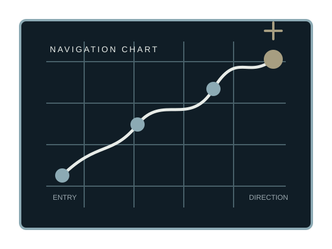

A small universe of data
Turning data into direction.
I collect scattered signals, shape them into systems, and turn numbers into stories people can actually use.
Begin the journey
World map
Featured mission
Marketing Spend Performance Analysis
A decision record separating true marketing efficiency from growth created mainly by bigger spend.
Enter mission control
Featured reading
The next signal has not been selected yet.
When a current book is ready, this is where its first observation will be held.
Open the archiveNext coordinate